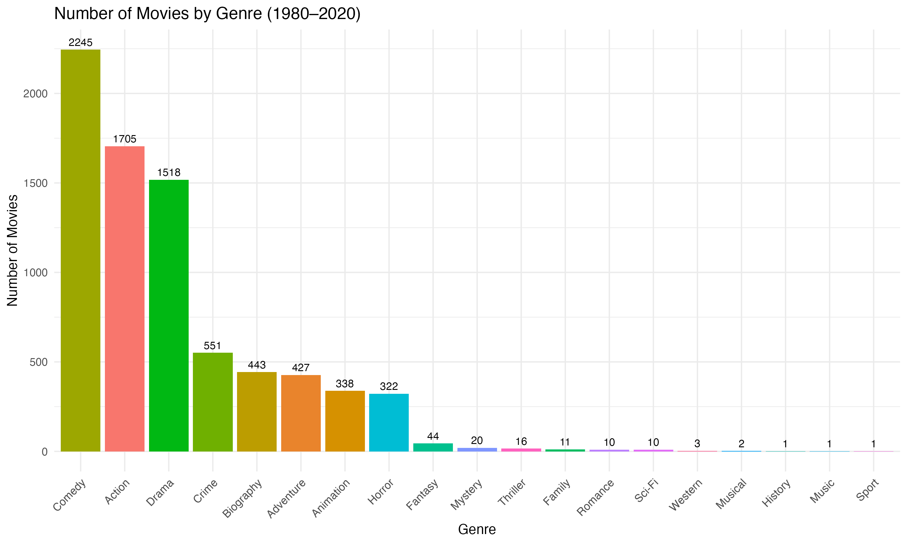
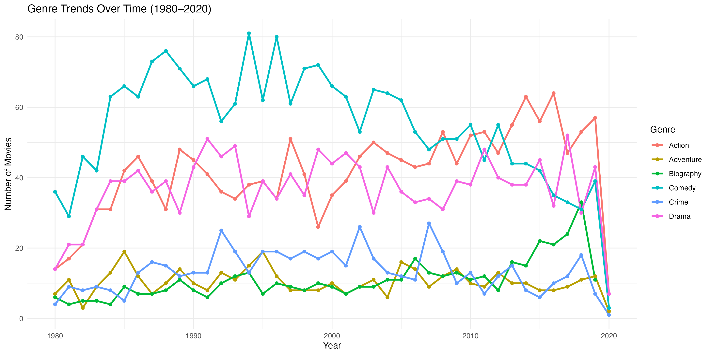
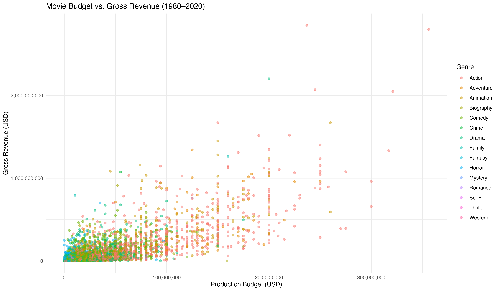
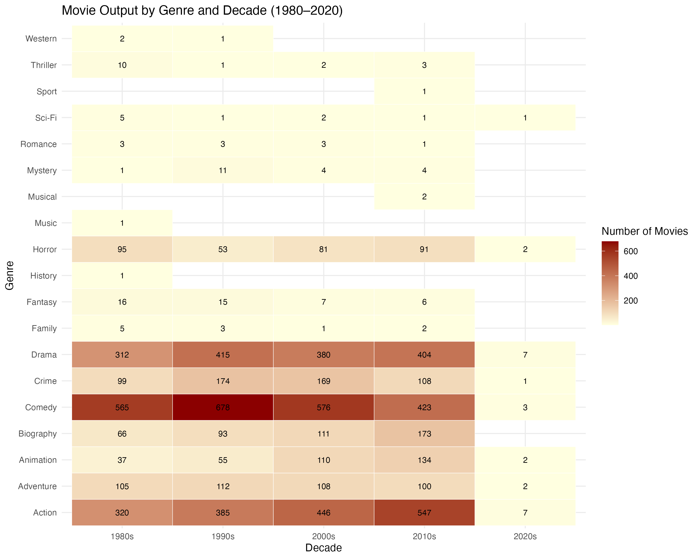
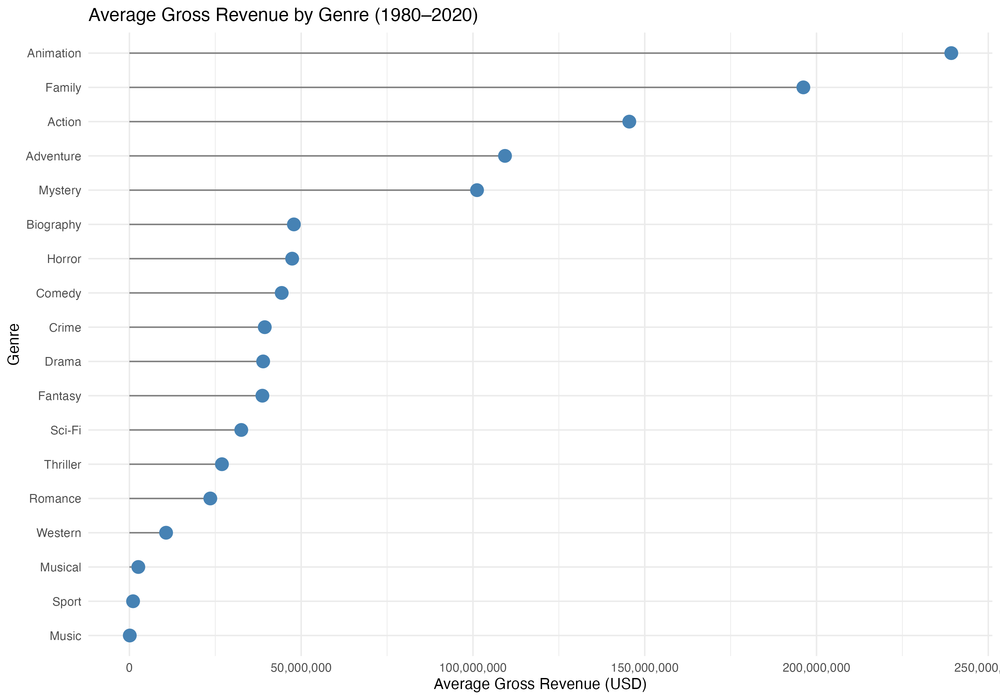
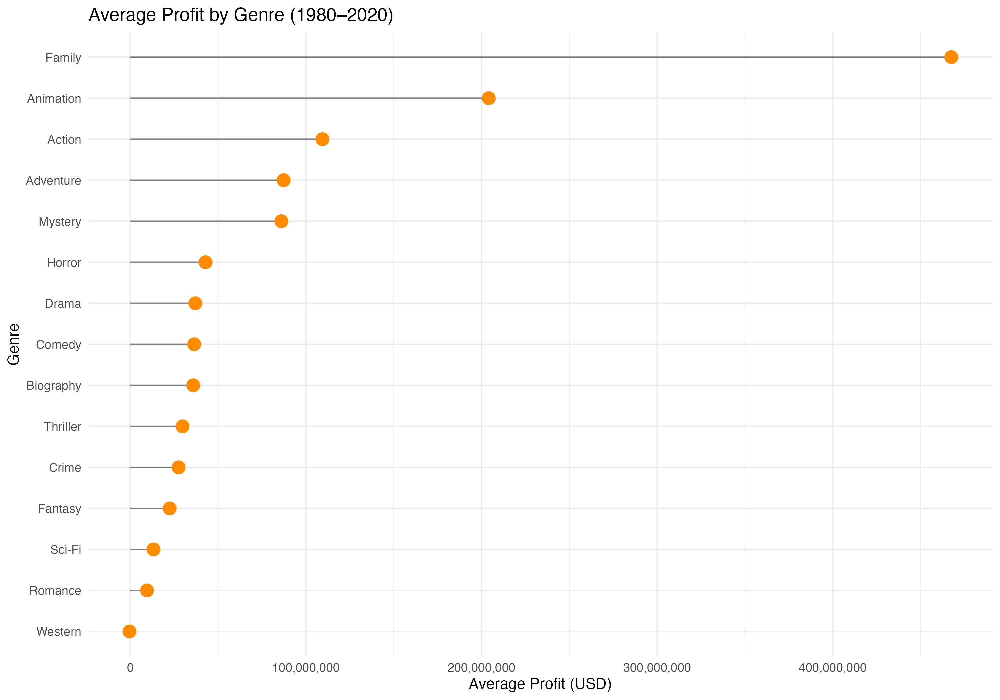
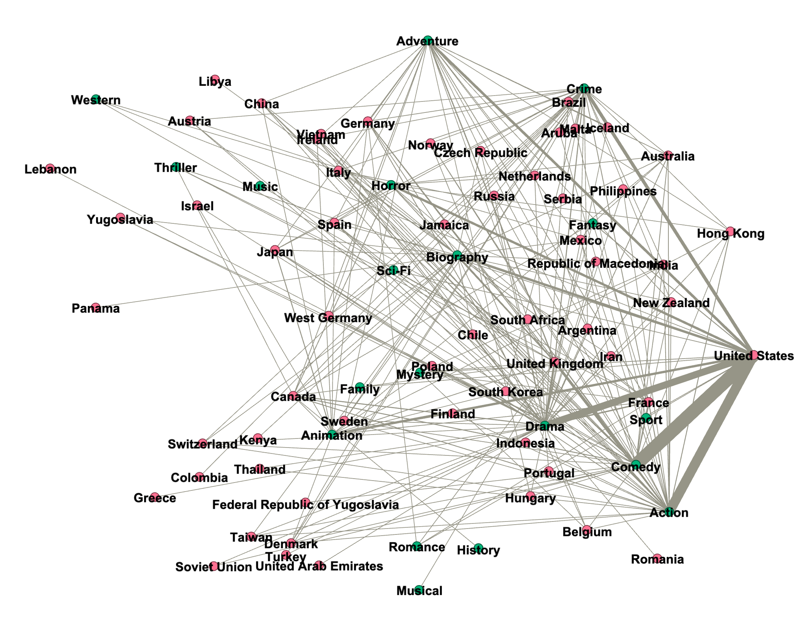

Project Overview
What does 40 years of global cinema look like when rendered as data? This project applies multiple visualization methods to a Kaggle dataset of 7,668 films (1980–2020), covering genre, release year, director, production budget, and gross revenue.
The goal was not simply to chart trends, but to expose structural patterns: which genres dominate and why, how investment correlates with return, and—most critically—how American cinema's gravitational pull shapes (and marginalizes) global film production.
Data Pipeline
The raw CSV was largely usable for genre and temporal analysis. Financial visualizations, however, required targeted cleaning: rows with missing budget or revenue values were removed using !is.na(), reducing the financial subset to 5,436 films. This filter was applied only where necessary; all other charts used the complete dataset.
For the Gephi network, the dataset required more substantial transformation. I used Python to parse and clean the data, then generated two separate CSV files—nodes and edges—encoding country–genre relationships weighted by film count.
Decade Grouping (R)
Gephi Node/Edge Generation (Python)
Visualizations
01 — Bar Chart: Genre Distribution
Comedy (2,245) and Action (1,705) lead production volume by a wide margin, with Drama (1,518) third. At the other extreme, Western, Musical, and Sport categories register single-digit counts—reflecting not their absence from cinema, but the dataset's single-genre labeling constraint, which systematically underrepresents hybrid films.

02 — Line Chart: Genre Trends Over Time
Comedy dominated consistently through the 1990s and 2000s, but Action overtook it around 2010—a visible shift in global market appetite. The most striking signal across all genres: a near-vertical decline beginning in 2020, uniformly confirming the COVID-19 pandemic's industry-wide production halt.

03 — Scatter Plot: Budget vs. Gross Revenue
A clear positive correlation holds across the dataset: higher production investment tends to yield higher box office returns. Both axes use log scales to prevent the wide value range (thousands to hundreds of millions) from compressing the majority of data points into an unreadable corner. Action and Adventure films cluster visibly at the high end of both axes. Outliers—low-budget overperformers and high-budget flops—are equally visible, and equally important.

04 — Heatmap: Genre Output by Decade
Color intensity encodes production volume; numerical annotations add precision. Comedy peaked in the 1990s (678 films) before declining; Action grew steadily, peaking in the 2010s (547 films)—reflecting the industry's accelerating pivot toward commercial franchises. The sparse 2020s column is not a data gap but a direct imprint of the pandemic.

05 — Lollipop Charts: Average Revenue & Profit by Genre
Despite being far outnumbered in production volume, Animation and Family films achieve the highest average box office revenue and profit margins. This counterintuitive finding demands methodological honesty: both genres have small sample sizes, making their averages susceptible to inflation by a handful of blockbusters. For genres with large samples—Action, Comedy, Drama—the averages are more reliable, and they confirm sustained commercial viability as the engine behind continued studio investment.


06 — Gephi Network: Country–Genre Bipartite Graph
The bipartite network maps countries (pink nodes) to genres (green nodes), with edge weight proportional to film count. The result is unambiguous: the United States dominates every major genre simultaneously, its edges dwarfing those of all other nations combined. Hollywood's structural centrality is not merely quantitative—it defines what genres get made, at what scale, and how the global film ecosystem is organized around a single gravitational center.

Key Findings
- Genre dominance is durable but shifting. Comedy and Action have led production for four decades; however, Action's acceleration after 2010 signals a structural tilt toward franchise-driven commercial cinema.
- Budget correlates with revenue—but not perfectly. The scatter plot confirms a positive relationship, yet outliers in both directions remind us that marketing, timing, and cultural resonance are variables no budget line can control.
- Animation punches above its weight. With far fewer releases, animated films consistently outperform in average revenue and profit—evidence of broader audience reach and franchise potential.
- Hollywood is not just dominant—it is structurally centralizing. The Gephi network reveals that US production volume is so disproportionate that it effectively defines genre norms for the entire global industry, leaving other national cinemas in its peripheral orbit.
- 2020 is a hard break in every trend line. The COVID-19 pandemic is not background noise in this dataset—it is a visible, industry-wide cliff edge that interrupts four decades of continuous growth.
Limitations & Reflection
This dataset assigns each film a single primary genre—a simplification that systematically undercounts hybrid films and inflates the apparent dominance of a few major categories. A more granular multi-label dataset would produce meaningfully different distributions.
Financial data was disproportionately absent for independent and non-English-language productions, which means the budget-revenue analysis skews toward large commercial releases. Any conclusions about profitability should be read as conclusions about studio-scale profitability specifically.